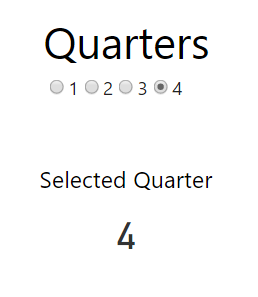

Starting with version 1.5 of the Power BI Custom Visuals SDK, we now have the ability to create “slicer” visuals, which are visuals that can filter data in other visuals on the same report.
For the purposes of this blog post, we are going to create a very simple radio button control to demonstrate the components needed to create a slicer. I also created a much more sophisticated “Range Slider” control that you can find here: PowerBI-visuals-rangeSlider
See my How to Get Started with Power BI Custom Visuals for general custom visual development tutorials.
You can download the source for this visual here: PowerBI-visuals-radioSlicer
You can download the visual to use in reports here: Download Radio Slicer
Here’s what this custom visual will look like when you are done with this tutorial.

Here’s what the icon looks like in the visualization pane:

Step 0: Create Data Set
Create a dataset that has the following structure:
| Values |
|---|
| 1 |
| 2 |
| 3 |
| 4 |
You can use Power BI Desktop, Excel, Streaming Datasets, SQL or whatever you prefer. I’ve provided an excel spreadsheet here that you can use. Just import it into Power BI using the web interface, or use Power BI Desktop and Publish it to the web.
Step 1: Create Visual: pbiviz new
If you have no idea what pbiviz new means, then see my How to Get Started with Power BI Custom Visuals for general custom visual development tutorials.
pbiviz new radioSlicer
Open this folder in VS Code or your preferred IDE.
Step 2: Update Settings: capabilities.json
Open capabilities.json and add replace its contents with the following json.
This file:
- Adds a single Grouping data property, which will get us the categories needed for filtering
- Adds the “General->filter” format property which allows this visual to participate in filtering capabilities.
- Adds a “top” number so we get the max categories allowed by Power BI. Right now that number is 30k categories max, but I set to 100000 for fun.
Step 3: Create Code: visual.ts
The meat of the visual lives in visual.ts. Rather than explain each piece individually, I’m including the full code file below with bullets that describe what is going on.
1. Instantiate an ISelectionManager object in constructor
2. Extract categories from Power BI data model
3. Loop through categories and create a “selectionId” for each of them. SelectionIds are objects that you pass to the SelectionManager’s select method. It contains the metadata needed to filter.
4. Loop through each value and inject a new radio button into the DOM for each value.
5. Add an onclick event handler to each radio button that grabs the matching selectionId, selects it and then calls applySelectionFilter().
Note: You can only filter on categories, not values, and you are limited to 30k categories.
Step 4: Package: pbiviz package
Run the following command to package the visual and share it as a pbiviz file.
pbiviz package
Hopefully this post helps you get started building slicer visuals.
Jon